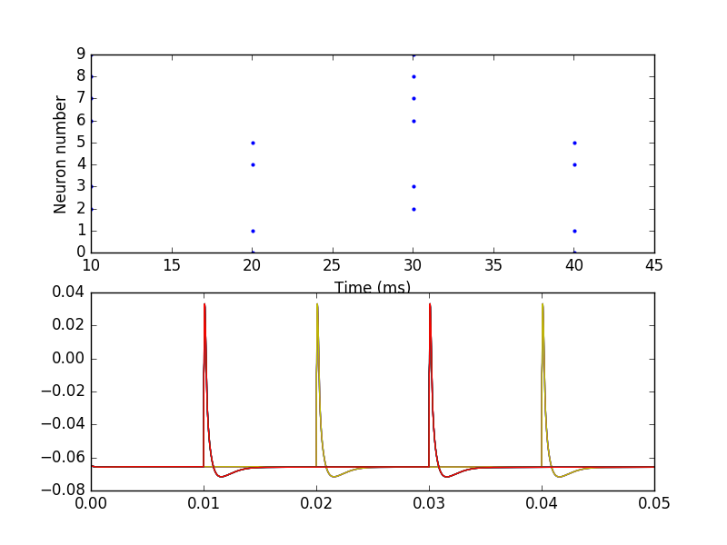
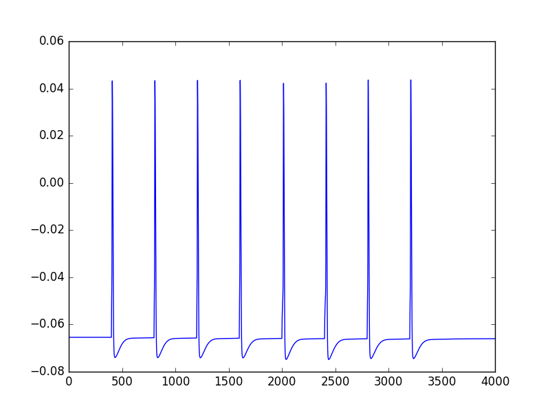

The brian and models for the paper: Rudnicki M, Hemmert W (2017) High entrainment constrains synaptic depression levels of an in vivo globular bushy cell model Frontiers in Computational Neuroscience 11:16 http://journal.frontiersin.org/article/10.3389/fncom.2017.00016 http://dx.doi.org/10.3389/fncom.2017.00016 are available here: https://github.com/mrkrd/cochlear_nucleus After installation (see instructions in the README.rst) run a brian file in the examples folder python brian_gbc_simple_demo.py to produce a graph like:  or a NEURON file python nrn_gbc_demo.py to produce this graph: 